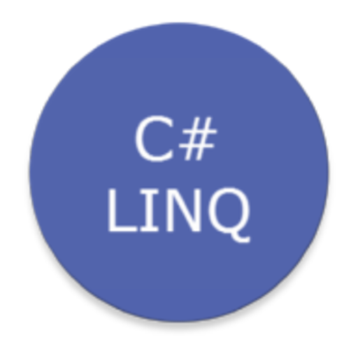

Jesús Rubén Gámez Molina
Desarrollador de software | Ingeniero en Sistemas Computacionales
Soy Ingeniero en Sistemas Computacionales con amplia experiencia en el desarrollo de software. A lo largo de mi carrera he diseñado e implementado soluciones tecnológicas orientadas a resolver necesidades reales, utilizando diversas tecnologías y lenguajes de programación. Me caracterizo por mi enfoque práctico, mi capacidad de adaptación y mi compromiso con la mejora continua, integrando constantemente nuevas herramientas y metodologías para ofrecer soluciones robustas, eficientes y de alto valor .
📍 Sobre mí
- Guasave, Sinaloa, México
- palomino070715@gmail.com
- (+52) 687-179-68-79
- jesus-ruben-gamez-molina
- RubMolina10
- Español / Inglés
💼 Experiencia profesional
Spyral Systems |Azzule Sytems | Desarrollador de Software
Abril 2025 – Actualidad- Desarrollo de soluciones web y backend para clientes de diferentes industrias.
- Implementación de proyectos orientados a eficiencia operativa, automatización de procesos y mejora continua.
- Uso de tecnologías modernas como .NET 6+, Vue.js 3, REST APIs, y gestión de bases de datos SQL Server y MongoDB.
- Participación en el diseño y desarrollo de portales empresariales con funcionalidades integradas de IA, enfocados en asistencias inteligentes, flujos conversacionales y análisis automatizado de información.
- Construcción de interfaces interactivas en Vue.js, integradas con módulos de IA para recomendaciones, validación inteligente y navegación guiada.
- Desarrollo de APIs REST en C# implementando servicios, patrones de arquitectura, lógica de negocio y persistencia en SQL/MongoDB, incluyendo historiales conversacionales y procesamiento avanzado de datos.
- Integración de tecnologías como SignalR/WebSockets, AutoMapper, log4net y Serilog para comunicación en tiempo real, trazabilidad y observabilidad.
- Optimización y automatización de procesos mediante IA, logrando reducir tiempos operativos y mejorar la experiencia de usuario en los portales implementados.
- Proyectos destacados: AzzuleAI(Portal Web el cual realiza automatizaciones de procesos via Prompts con Lenguaje Natural)
Coppel S.A. de C.V. | Desarrollador de Software – Contabilidad y Finanzas
Agosto 2022 – Marzo 2025- Desarrollo y mantenimiento: Diseño, implementación y mantenimiento de soluciones para sistemas contables y financieros, incluyendo facturación, nómina y gestión de impuestos.
- Proyectos estratégicos: Participación en proyectos clave como MultiIEPS, venta de motos y desarrollo de una aplicación de monitoreo de transacciones con .NET C#.
- Tecnologías: Experiencia en C#, C++, Java, SQL (PostgreSQL, SQL Server), Java Spring Boot.
- Seguridad: Mitigación de vulnerabilidades, remediación de código y habilitación de sistemas en casos de ciberataques.
FEOSS | Desarrollador de Software – Asesor y regulador
Enero 2018 – Enero 2022- Asesor en regularización de automóviles extranjeros.
- Desarrollo de sistema de almacenamiento de datos con C# y SQL Server para la gestión de vehículos importados.
Proyectos Destacados 🛠️ . 💻
 Azzule Systems - Spyral Systems
Azzule Systems - Spyral Systems
AzzuleAI Platform
Azzule es un proveedor líder de soluciones en la nube para la gestión de datos y el cumplimiento normativo en la cadena de suministro alimentaria. Se especializa en inocuidad alimentaria, sostenibilidad y automatización de auditorías, ayudando a productores, empacadores y distribuidores a optimizar el cumplimiento regulatorio, reducir riesgos y mejorar la eficiencia operativa.
Coppel S.A. de C.V.
Proyectos trabajados
Durante mi estancia en Coppel participé en diversas actividades, tanto en el desarrollo y mantenimiento de soluciones para sistemas legados como en el desarrollo de soluciones normativas requeridas por el gobierno. Estuve involucrado en proyectos relacionados con temas fiscales, incluyendo nómina, sistemas DRP de facturación con timbrado de facturas y sus posteriores cancelaciones. A continuación, se presentan los principales proyectos en los que participé:
Proyectos personales 💡
CodeAI – Developer Intelligence Dashboard
Proyecto personal
CodeAI es una plataforma web de análisis inteligente de código diseñada
para centralizar la gestión de proyectos de software, analizar cambios
en repositorios y detectar posibles problemas de calidad, mantenibilidad
y riesgo mediante inteligencia artificial.
La solución fue desarrollada con Angular en el frontend y Node.js,
Fastify y TypeScript en el backend, utilizando SQL Server para la
persistencia de proyectos, usuarios, sesiones, análisis y hallazgos.
CodeAI se integra con GitHub para consultar repositorios, ramas y commits,
permitiendo seleccionar cambios específicos de un proyecto y enviarlos
a un motor de análisis basado en inteligencia artificial.
El sistema procesa los archivos modificados en cada commit y genera
información técnica como nivel de riesgo, Code Health, resumen del
análisis y hallazgos clasificados por severidad, categoría, archivo
y línea de código.
La plataforma también incorpora un sistema completo de autenticación
y autorización. Las contraseñas son protegidas mediante Argon2id y las
sesiones utilizan tokens seguros almacenados mediante cookies HttpOnly,
manteniendo únicamente el hash correspondiente de cada sesión en
SQL Server.
CodeAI cuenta con roles de Administrador y Usuario, protección de rutas
tanto en Angular como en el backend y un sistema de asignación de
proyectos por usuario, permitiendo controlar qué proyectos puede
consultar y analizar cada cuenta.
El proyecto fue desarrollado utilizando una arquitectura modular,
separando responsabilidades entre autenticación, usuarios, proyectos,
análisis, integración con GitHub, inteligencia artificial y acceso
a datos.
- Dashboard centralizado de métricas y análisis.
- Gestión de proyectos y tecnologías.
- Integración con repositorios de GitHub.
- Consulta de ramas y commits.
- Análisis de código mediante inteligencia artificial.
- Análisis individual de commits.
- Detección y clasificación de hallazgos técnicos.
- Clasificación de hallazgos por severidad.
- Métricas de Code Health y nivel de riesgo.
- Historial de ejecuciones de análisis.
- Sistema de autenticación y autorización.
- Contraseñas protegidas mediante Argon2id.
- Sesiones seguras mediante cookies HttpOnly.
- Sesiones revocables almacenadas en SQL Server.
- Protección de rutas mediante Guards en Angular.
- Roles de Administrador y Usuario.
- Administración de usuarios desde el dashboard.
- Asignación de proyectos específicos por usuario.
- Validación de permisos desde el backend.
🛠️ Habilidades técnicas
🔧 Backend
🎨 Frontend
🗄️ Bases de Datos
☁️ Cloud & DevOps
🧰 Otras herramientas

💻 Sistemas Operativos
📚 Formación Académica
Instituto Tecnológico Superior de Guasave
Ingeniero en Sistemas Computacionales
📅 Agosto 2018 – Diciembre 2022Centro de Estudios Tecnológicos Industrial y de Servicios No. 108
Técnico en Programación
📅 Agosto 2015 – Julio 2018